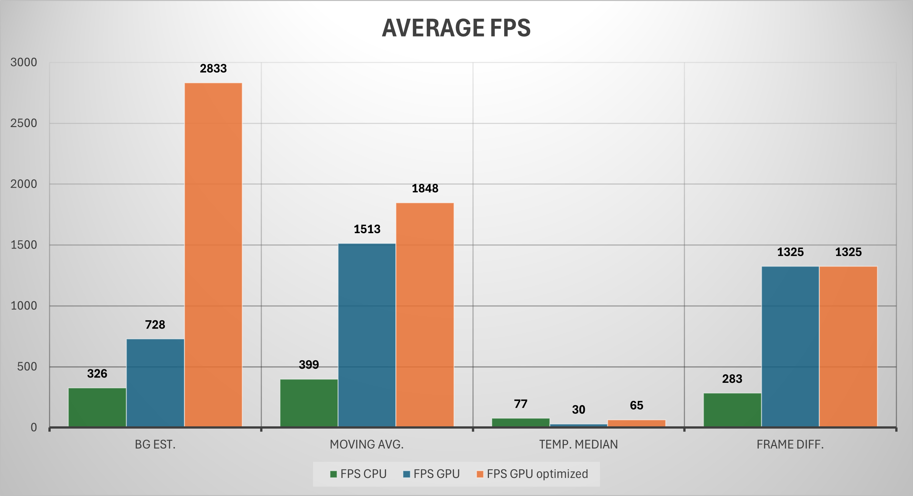

Antoine HAVARD Emma CASAGRANDE Paul HAARDT Salomé BERGER
Description du sujet¶
Ce projet consiste à détecter la présence de mouvement sur un flux vidéo. Plus précisément, les objectifs sont multiples: - traiter un flux vidéo en temps réel, ou à défaut plus vite que son débit d’entrée - segmenter l’image pour indiquer les zones de mouvement identifiées - indiquer à l’aider d’un signal binaire si le mouvement est important Pour y parvenir, nous prenons avantage de la parallélisation GPU. En effet, plusieurs algorithmes ont été utilisés pour traiter le flux.
Les algorithmes¶
Après avoir implémenté l’algorithme suggéré dans l’énoncé, qui est plus ou moins une moyenne glissante, nous avons exploré d’autres pistes. Nous les détaillons ici, avec leur aboutissement, et l’approche générale. Les benchmarks des approches implémentées sont disponibles plus bas.
Basic background estimation¶
Cet algorithme est plutôt simple. Pour chaque pixel, il assigne une valeur de référence comme étant le fond (noté background après), et y compare la valeur du pixel de l’image actuelle. Cette comparaison se fait avec une formule de calcul de distance euclidienne entre valeurs RGB:
\(dist(Pix_{current}, Pix_{background}) = \sqrt{(R_{Pix_{current}} - R_{Pix_{background}})^2 + (G_{Pix_{current}} - G_{Pix_{background}})^2 + (B_{Pix_{current}} - B_{Pix_{background}})^2}\)
Ce type de comparaison en RGB ne tient pas compte de la perception humaine des couleurs, mais pour identifier un changement de couleur dû au mouvement, il est largement suffisant.
Au bout de \(n\) frames (souvent 100), si la comparaison produit toujours une distance suffisamment élevée (par rapport à un seuil fixé), on considère qu’il y a mouvement. Sinon, on fait une moyenne entre le pixel de background et le pixel actuel.
✅Avantages:
- Simple à mettre en œuvre
- Rapide à calculer
- Résiste à de petites variations de couleur dues au bruit
❌Inconvénients: - Initialiser les pixels de référence depuis la première image peut introduire des biais (comme des artefacts fantômes des objets en mouvement présents à la première image) - Choisir le nombre d'images \(n\) pour déterminer si le background change peut être délicat. Si trop élevé, il peut y avoir des "traces" derrière les objets en mouvement - Comme on traite un pixel à la fois, si quelques pixels bougent côté à côte comme dans le cas de feuilles, ce mouvement sera détecté alors qu'il n'est pas intéressant
Moving Average¶
Cet algorithme utilise un modèle de fond adaptatif basé sur une moyenne mobile. Il est similaire au précédent, mais on utilise un coefficient \(\alpha\) pour pondérer l’importance du pixel candidat (celui de l’image actuelle) avec le pixel du background. On calcule la nouvelle valeur du pixel du background ainsi: \(BG_{new} =\\\alpha \times Pix_{current} + (1-\alpha) \times BG_{old}\) ✅Avantages: - Relativement simple à implémenter - Rapide à calculer - Comme le précédent modèle, il s’adapte aux changements légers - Le paramètre \(α\) contrôle la vitesse d'adaptation, évitant les changements brusques ❌Inconvénients: - Mêmes problèmes que le précédent algorithme, même si on est capable de régler l’importance des brusques changements - Le paramètre \(\alpha\) dépend fortement de la vitesse prévue des objets sur le flux
Temporal Median¶
Cet algorithme utilise un modèle de fond statistique basé sur la médiane des valeurs historiques. Pour chaque pixel, il maintient un historique des \(n\) dernières valeurs RGB et utilise la médiane comme référence de fond. La détection de mouvement se fait par comparaison de distance euclidienne entre le pixel actuel et sa médiane historique. Le pixel de fond est ni plus ni moins que la médiane, calculée comme ci-contre: \(BG_{pixel} = median(\text{History}_{pixel}[0...n])\) ✅Avantages: - grâce à la médiane, les pics de bruits ont peu d’impact - les artefacts temporaires sont ignorés - on peut régler la taille de l’historique pour décider de la vitesse d’adaptation aux changements ❌Inconvénients: - stocker un historique de valeurs par pixels est coûteux spatialement - plus l’historique est grand, plus les changements légitimes prennent du temps à s’intégrer - calculer la médiane est complexe computationnellement, même si on peut faire un tri partiel des données pour la trouver
Frame Differencing¶
Le Frame Differencing consiste simplement à soustraire l'image actuelle de l'image précédente de la séquence. Le code est simple à mettre en œuvre: 1. Conversion en niveaux de gris 2. Calcul de la différence absolue entre les pixels de chaque image 3. L'application d'un seuil déterminera si l'intensité est considérée comme un mouvement ou non \(\text{diff}(\text{Frame}_t, \text{Frame}_{t-1}) = \\|\text{Intensity}_{current} - \text{Intensity}_{previous}|\) ✅ Avantages: - Simple à implémenter - Faible utilisation mémoire - Rapide à calculer - Détection immédiate des changements ❌ Inconvénients: - Ombres dans les images qui peuvent causer de fausses cibles - Les taches dans l'arrière-plan apparaissent dans la différence d'image même si elles ne sont pas en mouvement (bruit de l'image et vibrations de l'appareil photo) - N'est pas indépendant de la vitesse de l'objet en mouvement - échoue pour les objets en mouvement lent car la différence est presque nulle - Sensible au bruit, aux ombres et aux changements d'éclairage - Pas de modèle de fond persistant - objets stationnaires temporaires créent des artefacts
Nettoyage du masque de mouvement - Morphologie mathématique¶
Après détection du mouvement à l’aide des différents algorithmes (background estimation, moyenne glissante, etc.), le masque de mouvement brut peut contenir beaucoup de bruit : des pixels isolés, des zones non connectées, ou encore des artefacts dus à la compression vidéo ou à la lumière. Pour améliorer la qualité de ce masque, une phase de nettoyage est effectuée, en deux étapes principales : ouverture morphologique et seuillage par hystérésis.
Seuillage par hystérésis¶
Pour affiner encore le masque et supprimer les zones ambiguës, un seuillage d’hystérésis est utilisé, inspiré de la méthode de Canny.
- On commence par détecter les pixels fortement activés (au-dessus d’un seuil th_high), considérés comme fiables.
- Ensuite, on propage à leurs voisins connectés les pixels modérément activés (entre th_low et th_high).
- Les pixels en dessous de th_low sont ignorés.
Cela permet de connecter des zones disjointes, tout en éliminant le bruit faible non connecté.
✅ Avantages :
- Résultats beaucoup plus propres visuellement
- Bords des objets mieux définis
- Supprime efficacement le bruit résiduel
❌ Inconvénients :
- Propagation coûteuse si l’image contient beaucoup de bords faibles
- Complexité \(O(N)\) mais avec propagation itérative (plusieurs passes)
Ouverture morphologique¶
L’ouverture est une opération issue de la morphologie mathématique. Elle consiste en une érosion suivie d’une dilatation, appliquée avec un même élément structurant.
- Erosion : on prend la valeur minimale dans le voisinage du pixel. Cela permet d'éliminer les petites zones bruitées.
- Dilatation : on prend ensuite la valeur maximale dans le même voisinage, ce qui permet de restaurer les zones pertinentes qui ont survécu à l’érosion.
Deux versions ont été codées :
- Carré : le voisinage est un carré centré sur le pixel, de côté r.
- Disque : le voisinage est un disque (défini comme tous les pixels à une distance ≤ r), plus fidèle à la géométrie des objets réels.
Les deux opérations sont appliquées sur une image binaire (les pixels sont stockés avec le type uint8), donc les minimums et maximums sont pris entre 0 et 255.
✅ Avantages :
- Supprime les faux positifs isolés (bruit)
- Conserve la forme globale des objets détectés
- Évite les contours déformés
❌ Inconvénients :
- Peut éliminer les petits objets légitimes
- Plus lent avec un élément structurant en disque (calcul du masque de disque)
Implémentation¶
- Application du seuillage par hystérésis via une propagation récursive
- Application de l’ouverture morphologique (disque ou carré) sur les valeurs binaires produites à l’étape précédente
Benchmarks & graphiques¶
Il est important de noter que pour des raisons de cohérence des données, les benchmarks ont été effectués sur la même machine, donc voici les spécifications. La vidéo utilisée est celle fournie initialement dans le sujet.
| GPU | CPU et RAM | Vidéo utilisée |
|---|---|---|
| NVIDIA GeForce RTX 3070 Mobile | AMD Ryzen 7 6800H | 320x240 pixels |
| 8GB | 16GB | 1700 frames |
| GDDR6 | SSD | 60fps |
| Non overclockée | 64bits architecture | format AVI |

Le graphe ci-dessus montre le nombre d’appels total effectué et la durée en millisecondes lors des appels mémoire memcopy. Il s’agit en effet d’une source importante de délai lors de la création d’une frame.
On peut constater que Background Estimator effectue 2 fois plus d’appels que les autres algorithmes car il doit stocker le nombre de frames écoulées qui sont différentes du pixel candidat en plus des valeurs de pixels de background elles-mêmes.
On remarque que Frame Differencing fait 2 moins d’appels vers l’appareil hôte car les valeurs de la frame précédente et actuelle sont envoyées vers le GPU, mais celui-ci ne renvoie que la valeur des différences absolues (voir formule dans les algorithmes), d’où la différence en nombre d’appels de hôte vers appareil et appareil vers hôte.
On note que l'algorithme Temporal Median est significativement plus long que les autres (environ 17 fois plus long). C’est logique puisque cet algorithme conserve un historique de valeurs par pixel, ce qui augmente la quantité de données à échanger entre le host et le device et inversement.

Ce graphe montre le nombre de frames produit par seconde en moyenne. On constate encore une fois que Temporal Median est moins performante que les autres (presque 30 moins performant). Les framerates sont donc les suivants: |REALTIME PROCESSING ?|BG_EST|FRAME DIFF|TEMP MEDIAN|MOVING AVG| |---|---|---|---|---| |FPS|2833|1848|65|1325| |120|✅|✅|❌|✅| |60|✅|✅|✅|✅| On constate effectivement que nos algorithmes pourraient traiter du flux vidéo temps réel seulement pour certains framerates, et Temporal Median mériterait quelques optimisations (détaillées plus bas). L’algorithme temporal median, bien qu’intéressant théoriquement, s’est révelé fondamentalement coûteux en mémoire et signifiquativement moins performants que les autres approches testées, tant en qualité de detection qu’en vitesse. C’est pourquoi nous avons choisi de ne pas investir de temps dans son optimisation au profit d’algotithmes plus léger et plus efficaces.
Analyse des bottlenecks et optimisations¶
L'objectif de cette étape est d'examiner les différents comportements de nos implémentations et de voir où se situent les bottlenecks potentiels.
Pour cela, nous utilisons Nsight Systems qui fournit un examen au niveau du système. Nous avons ajouté l'option --trace=cuda,nvtx pour spécifier le suivi pour les exécutions CUDA et NVTX.
Dans l'ensemble, Nsight Systems a fourni une analyse dans les points suivants:
- Data Transfer Analysis: transfert de données entre host (CPU) et device (GPU)
- Kernel Overview: analyse des kernels
En particulier, nous avons examiné le taux d’occupation (occupancy) de notre implémentation (l'efficacité avec laquelle nous utilisons les ressources de calcul du GPU) :
1. Latence Instructions: Le temps nécessaire à l'exécution des instructions.
2. Transfert de données: Le temps nécessaire pour déplacer les données entre host et device.
Dans un premier temps, on a travaille à faire des implémentations d’algorithmes sans mask cleaning pour avoir une idée du fonctionnement.
Pas d’optimisations + Pas de Mask Cleaning ✅
|Durée en µs|BG_EST|MOVING AVG|TEMP MEDIAN|FRAME DIFF|
|---|---|---|---|---|
|CUDA API
Summary (cuda_api_sum)|1126|519|17525|585|
|CUDA GPU Kernel Summary
(cuda_gpu_kern_sum)|21|20|11247|28|
|CUDA GPU MemOps Summary (cuda_gpu_mem_time_sum)|227|122|4114|142|
|FPS GPU|728|1513|30|1325|
Premièrement, on remarque que Temporal Median présente des temps d'exécution disproportionnellement élevés dans les deux configurations. Avec 17525µs d'API et 11247µs de kernel en configuration non-optimisée, cet algorithme limite sévèrement le débit, environ 25-50x plus lent que les autres algorithmes.
Temporal Median maintient un ratio élevé (1.56 non-optimisé, 0.26 optimisé), révélant une transition d'un bottleneck API vers un bottleneck computationnel. Les autres algorithmes présentent des ratios API/kernel plus favorables, expliquant leurs performances supérieures.
En plus, La première chose dont nous nous sommes rendus compte est que le transfert de mémoire était incroyablement inefficace dans nos implémentations naïves. Par exemple, dans le background estimation nous avons immédiatement identifié un goulot d'étranglement dans les transferts de mémoire:
BACKGROUND ESTIMATOR: CUDA GPU MemOps Summary by Time (cuda_gpu_mem_time_sum)
|Operation|Time (%)|Total Time (ns)|Count|
|---|---|---|---|
|[CUDA memcpy Host-to-Device]|52.2|145,785,511|6,796|
|[CUDA memcpy Device-to-Host]|47.8|133,591,106|6,796|
Lors de l'exécution de bg_estimator, près de 6800 transferts de mémoire ont lieu par image (HOST-TO-DEVICE et DEVICE-TO-HOST), prenant environ chacun 140 ms à s’exécuter. Nous avons donc cherché à réduire le temps et le nombre d’opérations concernant la mémoire.
Afin de faire cela, plusieurs idées sont venues à l'esprit : 1. Mémoire Persistente 2. Mémoire Partagée 3. Coalescence de la mémoire
Mémoire Persistente¶
Afin de r√©duire les co√ªts d'initialisation √† chaque image, nous utilisons une m√©moire persistante en d√©finissant plusieurs de nos variables comme globale qui sera r√©utilis√©e √† chaque image. Background estimator: (no mask cleaning) ✅ | | | | | |---|---|---|---| |Metric|Before|Now|Improvement| |Total Mem Transfers|6,796|1,699|üìâ~75% fewer transfers| |Mem Transfer Time|~280 ms|~64.4 ms|üìà~76% faster| |Kernel Time|~8.6 ms|~8.7 ms|üìàSlight increase| Moving average: (no mask cleaning) ✅ | | | | | |---|---|---|---| |Metric|Before|Now|Improvement| |Total Mem Transfers (CUDA memcpy Host-to-Device + Device to host each)|3,398|1,700|üìâ~ 50% fewer trasnfers| |Mem Transfer Time (total)|~130 ms|~64 ms|üìà ~ 50% faster| |Kernel Time|~5.7 ms|~5.7 ms|üìàSlight increase| Dans l'ensemble, nous avons am√©lior√© l'efficacit√© des transferts de m√©moire.
Mémoire Partagée¶
Une autre optimisation que nous avons envisag√© d'ajouter √©tait l'utilisation de la m√©moire partag√©e. Cependant, en examinant les utilisations de la m√©moire partag√©e dans CUDA, nous avons r√©alis√© qu'elle ne correspondait pas √† l'impl√©mentation de notre code. Les r√©sultats obtenus avec Nsight le d√©montrent : Background Estimator: ✅ | | | | | |---|---|---|---| |Metric|Before|Now|Improvement| |Total Mem Transfers|6,796|6,796|❌ no change| |Mem Transfer Time|~270 ms|~273 ms|❌ no change| |Kernel Time|~7.8 ms|~9.7 ms|üìâ slower| Observations g√©n√©rales : Dans notre cas particulier, l'utilisation de la m√©moire partag√©e n'a pas sembl√© √™tre le meilleur choix. Nos threads traitent pixel par pixel alors que la m√©moire partag√©e est plus utile dans les cas o√π les donn√©es sont r√©utilis√©es et o√π les threads d'un m√™me bloc ont besoin d'acc√©der aux m√™mes donn√©es ou √† des donn√©es voisines. Cela a ajout√© un niveau de difficult√© suppl√©mentaire.
Mémoire coalescente¶
Toute notre mémoire est coalescée, ce qui garantit que les threads au sein d'un warp accèdent à des adresses mémoire consécutives, minimisant ainsi la latence.¶
Version Finale (sans et avec optimisations) ✅
|Durée en µs|BG_EST (AVANT)|BG_EST (APR)|MOVING AVG (AVANT)|MOVING AVG (APRÈS)|
|---|---|---|---|---|
|CUDA API Summary
(cuda_api_sum)|1126|230|519|436|
|CUDA GPU Kernel Summary
(cuda_gpu_kern_sum)|21|21|20|20|
|CUDA GPU MemOps Summary
(cuda_gpu_mem_time_sum)|227|102|122|85|
|FPS GPU optimized|728|2833|1513|1848|
Conclusion¶
Ce projet nous a permis de découvrir concrètement l’intérêt de la parallélisation GPU dans un contexte de traitement d’images en temps réel. En partant d’un algorithme simple de détection de mouvement basé sur une moyenne glissante, nous avons exploré, plusieurs approches complémentaires : background estimator, temporal median, frame differencing, ainsi qu’une pipeline de nettoyage basée sur la morphologie mathématique. La mise en œuvre de ces algorithmes sur GPU nous a confrontés à des problématiques de transferts mémoire, d’optimisation des accès, et de choix d’architecture. L’utilisation d’outils comme Nsight Systems nous a permis d’identifier les principaux goulots d’étranglement et d’améliorer considérablement les performances globales, notamment via l’utilisation de mémoire persistante. Enfin, ce projet nous a donné une vision claire des compromis à faire entre précision, robustesse, et performance. Il nous a également offert une expérience complète, de la conception à l’optimisation, en passant par la validation expérimentale sur des vidéos réelles.
Répartition des tâches¶
| Salomé | Emma | Paul | Antoine | |
|---|---|---|---|---|
| Recherches algorithmes | ✅ | ✅ | ✅ | ✅ |
| Implémentations C++ | ✅ | ✅ | ✅ | ✅ |
| Implémentations CUDA | ❌ | ✅ | ❌ | ✅ |
| Optimisations algo CUDA | ❌ | ✅ | ❌ | ✅ |
| Architecture | ❌ | ❌ | ❌ | ✅ |
| Recherches morphologie | ✅ | ❌ | ✅ | ❌ |
| Implém. morpho. C++ | ✅ | ❌ | ✅ | ❌ |
| Implém. morpho. CUDA | ❌ | ❌ | ✅ | ❌ |
| Benchmarks | ✅ | ✅ | ❌ | ❌ |
| Interprétation | ❌ | ✅ | ✅ | ✅ |
| Rapport | ✅ | ✅ | ✅ | ✅ |
| Graphiques | ✅ | ❌ | ✅ | ❌ |
Bibliographie¶
CUDA 4: Profiling CUDA Kernels
This is the fifth article in the series I have been writing about Programming in CUDA.
https://medium.com/@rimikadhara/cuda-4-profiling-cuda-kernels-0664252f0ac5
projet.liris.cnrs.fr
https://projet.liris.cnrs.fr/imagine/pub/proceedings/ICPR-2016/media/files/1809.pdf
hal.science
Introduction to Motion Detection: Part 1
The easiest way to detect motion with opencv
https://medium.com/@itberrios6/introduction-to-motion-detection-part-1-e031b0bb9bb2
Understanding CUDA Memory Usage: A Practical Guide
I understand that learning data science can be really challenging…
https://medium.com/@heyamit10/understanding-cuda-memory-usage-a-practical-guide-6dbb85d4da5a
Introduction to Motion Detection: Part 1
The easiest way to detect motion with opencv
https://medium.com/@itberrios6/introduction-to-motion-detection-part-1-e031b0bb9bb2
Motion Detection Based on Frame Difference Method
Introduction to Motion Detection
https://medium.com/@200101022/motion-detection-based-on-frame-difference-method-20c2185b7f05
core.ac.uk